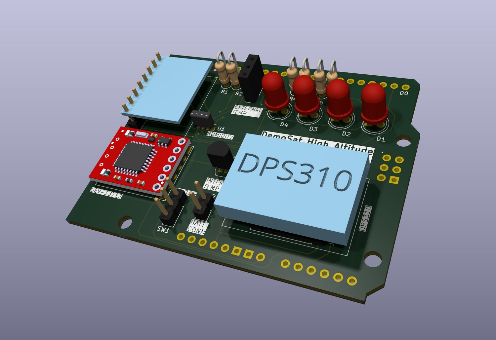
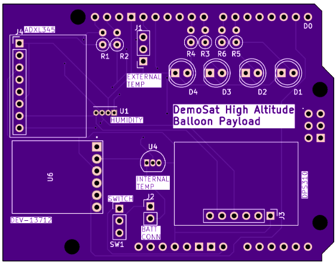
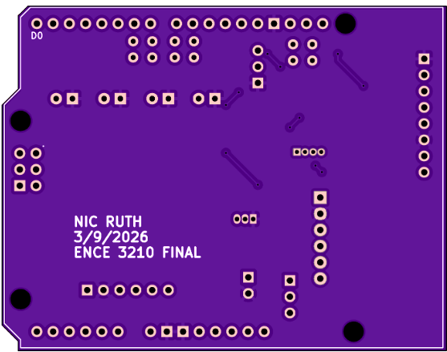
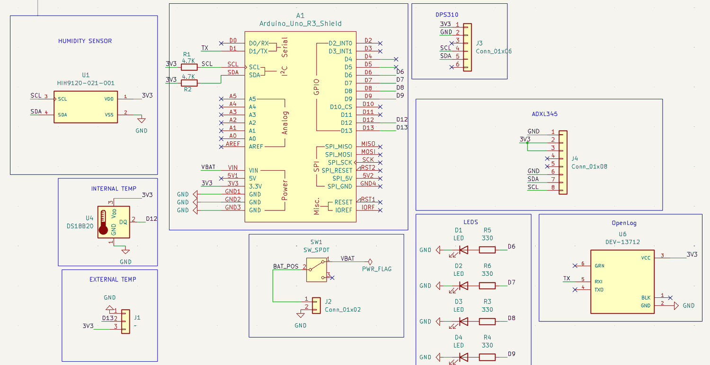
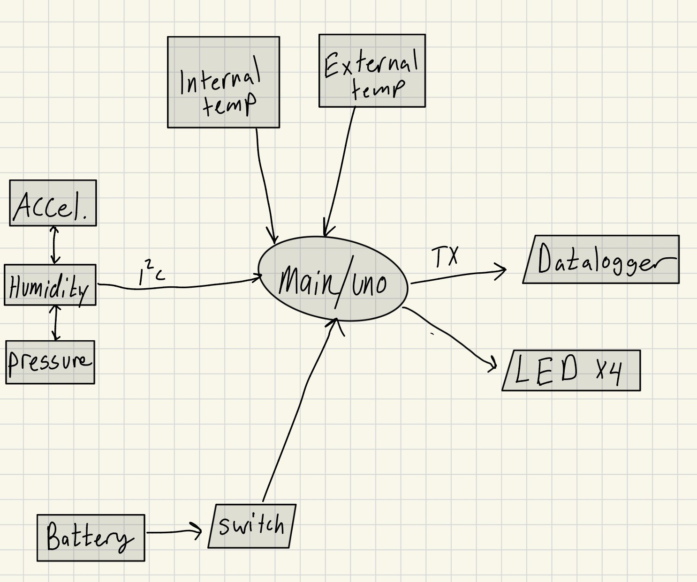

PCB Design · Sensors · Component Selection
DemoSat High-Altitude Balloon Payload

The actual problem
This wasn't a blank-page design. There was an existing balloon payload, and the task was to rebuild it — because when I ran the feasibility check on the original, two of its four sensors were simply out of production. You cannot buy the humidity or pressure parts any more, so the original design is unbuildable regardless of whether it once worked.
That turned the project into a component-selection exercise with hard constraints, which is a far more realistic engineering problem than picking parts freely.
Constraints and outcome
| Requirement | Budget | Achieved |
|---|---|---|
| Mass | under 200 g | ~120 g |
| Cost | under $147 | ~$115 |
| Power | less than the original (~90 mA) | 259 mW typical, 459 mW with all LEDs on |
Sensor selection
Every replacement had to justify itself against the part it replaced — not just "is it available", but does it improve resolution, accuracy, or power draw, and does it drop the supply rail toward 3.3 V so the whole board can share one voltage.
| Measures | Original | Chosen | Why |
|---|---|---|---|
| Acceleration | ADXL335 | ADXL345 | I²C instead of analog, 13-bit, range to ±16 g rather than ±3 g, ~140 µA at 3.3 V |
| Pressure | HSCDANN015PAAA5 | DPS310 | 300–1200 hPa, runs on 1.7–3.6 V instead of 5 V, and only ~1.7 µA at 3.3 V |
| Humidity | HIH-4030 | HIH-9120 | I²C, ±1.7 % accuracy against ±3.5 %, physically much smaller |
| Temperature | TMP36 | DS18B20 | Digital rather than analog, 9–12 bit instead of ADC-limited to 10, ±0.5 °C against ±2 °C, waterproof package suits external mounting |
Three of the four talk I²C, so they share one two-wire bus. The DS18B20 is the exception — it's a 1-Wire part, which costs a pin but buys a sealed probe that can sit outside the enclosure and read the actual outside air rather than the inside of a warm box.
Going digital across the board also sidesteps the Arduino's 10-bit ADC, which was quietly the accuracy ceiling on the original design no matter how good the analog sensors were.


The finished layout is a 2-layer board, 69.5 × 54.0 mm (2.74 × 2.13 in) — three of them quoted at $29.05 through OSH Park.

